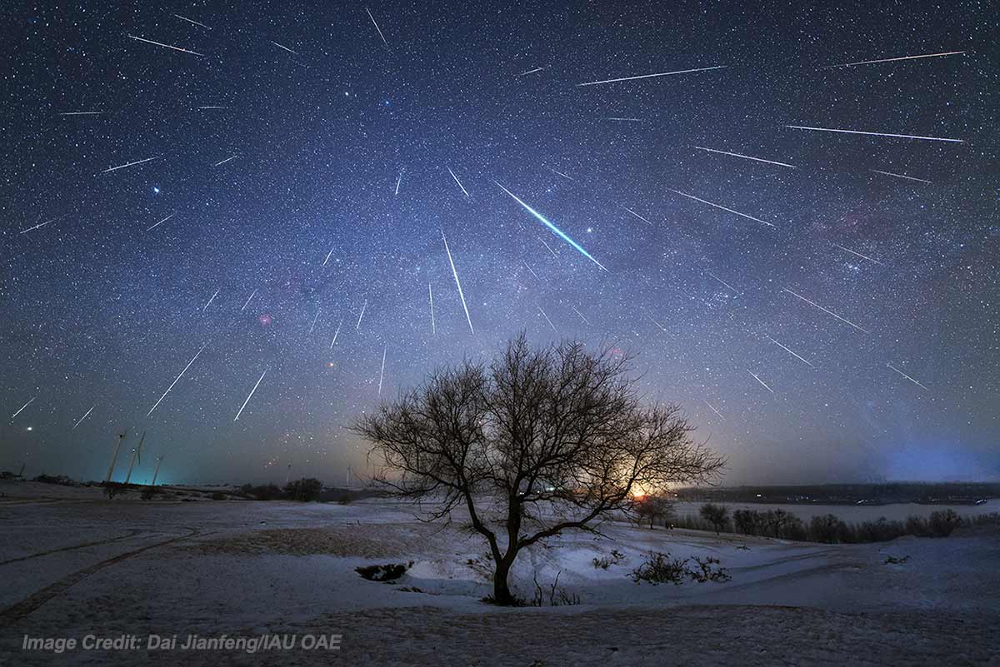
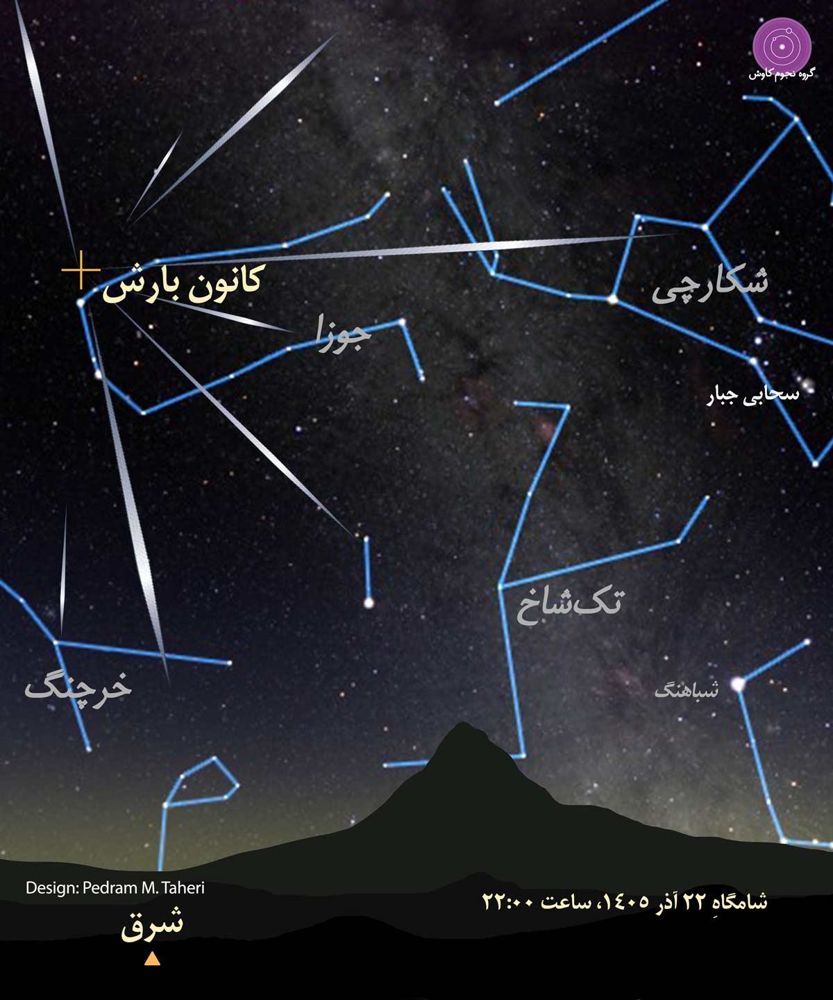

شهابهای جوزایی ، آخرین پردۀ پاییز
نویسنده: پدرام محمدطاهری
آخرین پرده فصل پاییز یعنی بارش شهابی جوزایی فرا میرسد و امسال مانند همیشه از میان هیمههای گدازان آسمان پاییز ، سینهی پر شهاب آذرماه اخگران زودگذر خود را گرمابخش چشمهای بیدار میکند. شاید این نمایش طبیعت درنگی باشد هرچند کوتاه برای مایی که از غوغاهای زمینی هیچ نصیبی جز شبهای تار و روزهای سخت نبردهایم و شاید طبیعت بهسان همیشه نقطه بازیابی توان ما باشد و شکوه آن بتواند ولو برای ساعاتی مرهمی شود برای ذهن و روان ما.
اگر هیاهوهایی که پیرامون بارش پرساووشی برپا میشود را کناری بگذاریم باید اعتراف کنیم که بارش شهابی جوزایی بیهیچ تردید پربارترین و باشکوهترین بارش شهابی سال است. هرچند این شهابباران همواره درست زمانی به وقوع میپیوندد که سرمای شبهای پاییز در نیمکره شمالی به اوج خود رسیده و رصد آن مقاومت بالایی را میطلبد اما از میان تمام پدیدههای نجومی سال بارش جوزایی از جنس دیگریست. اوج این بارش شهابی امسال در وضعیتی رخ خواهد داد که ماه، هلالِ نزدیک به تربیع اول است و ساعاتی قبل از نیمشب آسمان را ترک میکند و خیلی بههنگام، پرده قیرگون آسمان پاییز برای این نمایش بیبدیل مهیا خواهد شد.

بارش شهابی جوزایی از اساس بارشی منحصر به فرد است و برخلاف تمام بارشهای مشهور، منشاء آن نه یک دنبالهدار که سیارکی مرموز است با نام فِیتون 3200 که هنوز هم بر سر طبقهبندی آن در میان منابع علمی اختلاف وجود دارد. این بارش شهابی اولین بار در میانه قرن نوزدهم در سال 1862 توسط رصدگران ثبت شد. هر چند در آن دوران جوزاییها بارشی کمتعداد بودند و در نهایت 10 الی 20 شهاب در هر ساعت را به نمایش میگذاشتند اما هر چه به دوران معاصر نزدیکتر میشویم بر تعداد شهابهای آن افزوده میشود. تا جایی که اکنون جوزایی پرتعدادترین بارش شهابی سال است و در شرایط ایده آل حدود 150 شهاب در هر ساعت را در تاریخ اوج بارش خود به نمایش میگذارد. همچنین برآوردها نشان میدهد که اختلالات گرانشی ناشی از سیارات بهویژه سیاره مشتری طی سالهای آینده بخش متراکم ذراتِ منشاءِ این بارش را به زمین نزدیکتر خواهد کرد که سبب خواهد شد در آینده بارشهای جوزایی حتا از این نیز پربارتر گردد.

بارش جوزایی هر سال از 13 آذرماه فعال میشود و تا 26 آذر فعال باقی میماند. این بارش شهابی در شبهای 22 و 23 آذر به اوج خود میرسد و در این تاریخ و شبهای نزدیک به آن بیشترین تعداد شهاب را به نمایش خواهد گذاشت. کانونِ این بارش در صورت فلکی جوزا و در شمال ستارهی «کاستور » این صورت فلکی قرار گرفته. اگر «اکثر» شهابهایی که این شبها خواهید دید را در مسیر خلاف جهتشان ادامه دهید به جایی در همین حوالی از آسمان خواهید رسید. کانون بارش شهابی در شبهای نزدیک به اوج، حدودا یک ساعت پس از غروب خورشید از شمال شرقی طلوع میکند. بنابراین درست با تاریک شدن هوا میتوانید انتظار دیدن جوزاییها را داشته باشید. بهویژه در دقایق اولیهی پس از تاریکی آسمان و زمانی که کانون بارش تنها چند درجه از لبه افق فاصله گرفته این شانس را دارید که با شکلی از شهابهای تابان مواجه شوید که به «زمینخراش» شهرهاند. شهابهایی پرنورکه به آرامی میسوزند و پیش از محو شدن مسافت نسبتا طولانی را در متن آسمان طی میکنند.
در شب اوج بارش یعنی شامگاه 22 آذر ، حوالی ساعت 22:00 به وقت محلی جوزا در ارتفاع حدود 40 درجهای از افق شرق قرار خواهد داشت. پیرو این اوجگیریِ جوزا و طبعا کانون بارش ، تعداد شهابها نیز فزونی خواهد یافت و غروب زودهنگام ماه (حدود یک ساعت پیش از این) همه چیز را برای شروع یک نمایش باشکوه در مناطق آسمانِ تاریک فراهم میکند.پیشبینی میشود تا نیمشب و ساعتهای اولیه بامداد (ساعت 2 بامداد) تعداد شهابها به اوج خود برسد و این زمانیست که کانون بارش خود را درست به بالای سر شما رسانده و زمین هم در حال عبور از درون متراکمترین ذرات شناور در فضای اطراف خود است. با نزدیک شدن به سحرگاه پیش از آنکه خورشید ، متن آسمان را از ستارهها جارو کند فرصت دارید با شهابهای بیشتری مواجه شوید زیرا طرفِ بامدادی زمین بیشترین برخورد را با ذرات آفرینندهی شهابها خواهد داشت. بهمانند وقتی که در هوایی برفی با اتومبیل خود در حال حرکت از میان ذرات برف هستید و ذرات برفی که به شیشه جلویی خودروتان برخورد میکند به مراتب بیشتر از ذراتی است که بر شیشه پشتی مینشیند.
رصد شهابها جز چند دست لباس گرم و محلی امن در بیرون از شهر و بدور از نورهای مصنوعی شهری چیز دیگری نیاز ندارد و هیچ تور و سفر سیاحتی چندین میلیونی و یا تلسکوپی هم نمیتواند برای شما شهابهای بیشتری فراهم آورد. صبور باشید و با چشمانتان تمام آسمان را جارو کنید بویژه در 30 تا 40 درجهای حوالی کانون بارش میتوانید شهابهای کشیدهتری را مشاهده کنید. هرچند شهابهای رنگین جوزایی در هر کجای آسمان میتوانند ظاهر شوند.
در آخر هم مانند همیشه یادآور شویم که زمین قرار نیست با ذراتی عظیم برخورد کند. عمده شهابهایی که خواهید دید را ذراتی به کوچکی یک سنگریزه در زمین بازی کودکان موجب میگردند که در سطوح بالایی جو به بیانی سادهشده آتش میگیرند و یک بارش شهابی هیچ تهدیدی برای نسل بشر نیست جز آنچه به اصطلاح همنوعان خودمان بر روی این کره خاک انجام میدهند
آسمانتان صاف